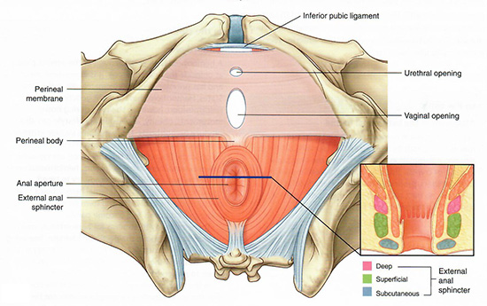
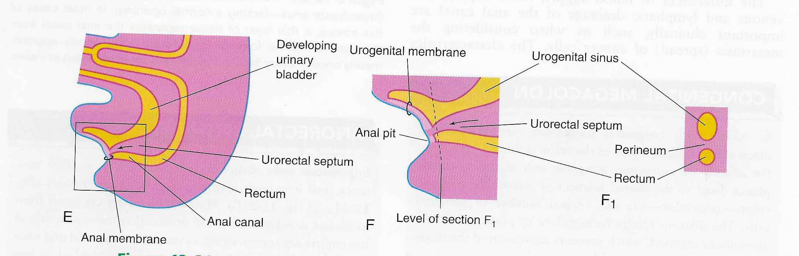

Pelvis and Perineum: Module 1 - Page 5 of 5
There is a membrane that lies on top of the urogenital triangle. Although we cannot see this membrane on our cadaver, its components are visable and include:
|  |
| Tap on image to enlarge |
| Add the perineal body. |
What is the origin of the perineal body? |
|
|
The perineal body is where the urorectal septum attaches to the coacal membrane.  |
|